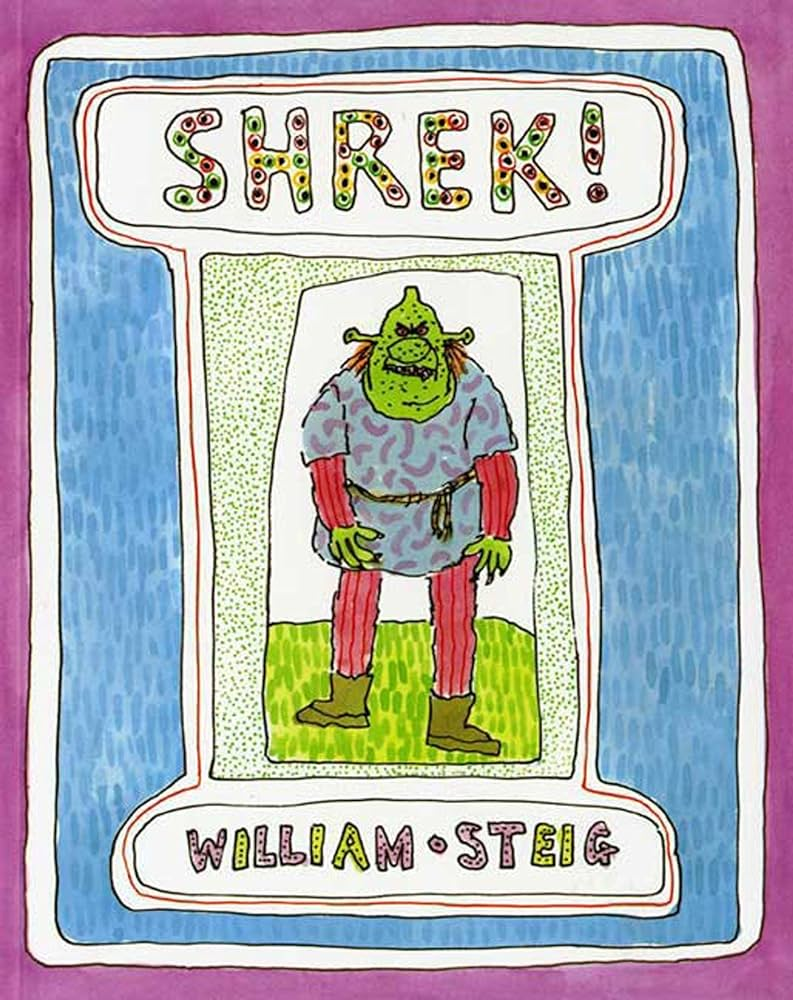
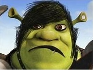
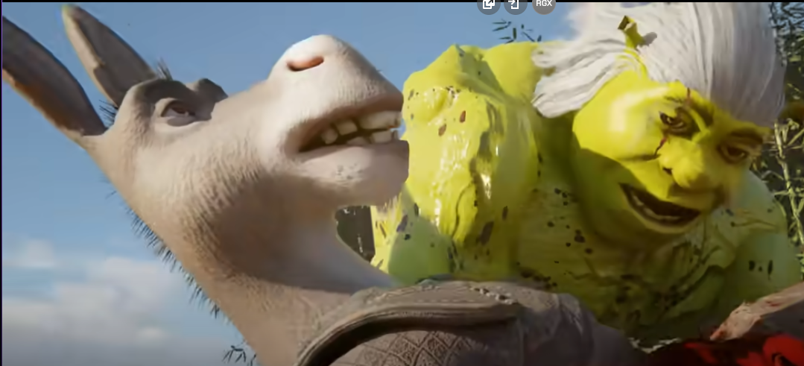
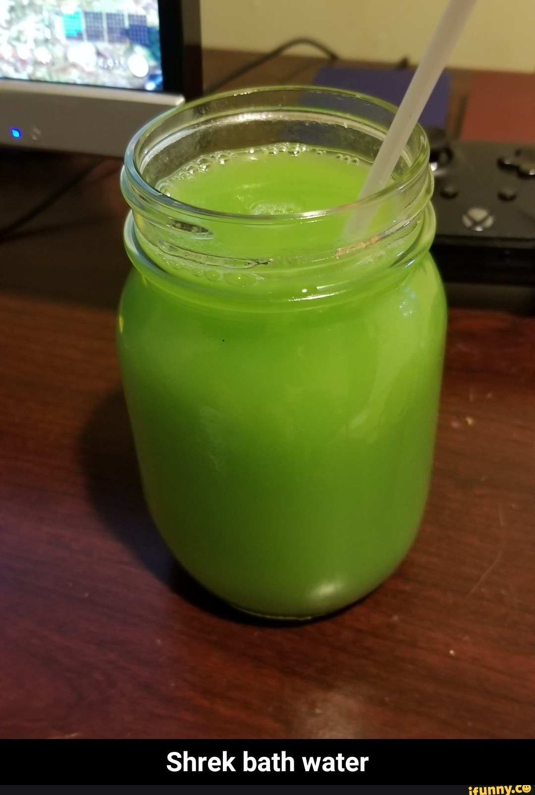
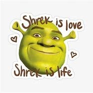

FÃ CLUB SHREK
Amamos Shrek por sua irreverência, que desafia os contos de fadas tradicionais. Seu humor afiado e sarcasmo nos fazem rir e pensar além dos estereótipos. Além disso, sua jornada de autodescoberta e aceitação nos ensina valiosas lições sobre amor próprio e aceitação das diferenças. Shrek é um ícone da cultura pop que conquistou nossos corações com sua personalidade única e suas aventuras inesquecíveis
ORIGEM
|  | "Shrek!" é um livro infantil escrito por William Steig e publicado em 1990. A história segue um ogro chamado Shrek que, após ser chutado de casa por seus pais, embarca em uma jornada para descobrir o mundo e encontrar seu próprio caminho. Ao longo do caminho, Shrek encontra várias criaturas estranhas e enfrenta desafios, tudo enquanto aterroriza qualquer um que encontra com sua aparência assustadora e habilidades incomuns. Durante suas aventuras, Shrek conhece uma bruxa que lhe diz que ele está destinado a encontrar e casar-se com uma princesa ainda mais feia que ele. Movido pela curiosidade, ele continua sua jornada até encontrar a princesa em um castelo guardado por um cavaleiro. Após derrotar o cavaleiro com facilidade, Shrek e a princesa descobrem que são almas gêmeas, ambos feios e felizes em sua própria pele. Juntos, Shrek e a princesa retornam ao pântano de Shrek, onde vivem felizes para sempre, aceitando-se e amando-se como são. A história é uma celebração da individualidade e da aceitação de si mesmo, com um toque de humor e charme característico de Steig. |
OUTRAS PARTICIPAÇÕES (imagens clicaveis)
|  | Fase Emo | Shrek, com seu cabelo preto e franja sobre os olhos, escreveu em sua fase emo todas as músicas de My Chemical Romance e Panic! At The Disco enquanto se escondia em seu pântano. Ele expressava sua solidão e melancolia nas letras, tocando o coração de muitos. Em uma de suas aventuras, ele encontrou Batman, uma princesa gótica que cantava suas composições sob a lua de gothan e juntos formaram uma familia. |
|
Filhos antes dos acontecimentos de Shrek 1 | Shrek teve diversos filhos antes dos acontecimentos de shrek 1 sendo um de seus filhos mais famosos o ouriço "Sonic" nascido da união entre Shrek e Batman que carinhosamente o apelidava de onion. Seu relacionamento não durou muito pois Batman deixou por seus estilos não serem mais parecidos pois shrek abandonou sua fase emo após o nascimento de seu primeiro filho, tendo também filhos menos famosos como "Crash bandicoot" e "Agumon" em relacionamentos menos duradouros. |
| Musica Brasileira | Shrek, conhecido no mundo da música sertaneja, começou sua carreira com shows em pequenos bares e rapidamente ganhou fama com sua voz poderosa e presença de palco carismática. Lançou diversos álbuns de sucesso, destacando-se com hits como "Sapequinha", "Coração Aberto", e "Amor de Primavera". Além de cantor, Shrek se tornou um ícone do sertanejo, conquistando fãs por todo o Brasil. Suas músicas continuam a tocar os corações dos apaixonados por sertanejo. |
|
|  | Mudou seus valores | Após eliminar Burro, seu melhor amigo que tentava tira-lo do controle de chin-chin e destruir o racismo, se arrependendo de suas escolhas e decidindo por fim ao racismo com suas próprias mãos mesmo que acabasse morrendo no caminho. |

BASE DA NOSSA FÉ
Shrek is love, Shrek is life é a base da minha religião porque encapsula uma profunda mensagem de aceitação e devoção. Shrek representa mais do que um simples personagem de animação; ele é um símbolo de amor incondicional e a personificação da verdadeira aceitação. No vídeo, Shrek surge como uma figura quase divina, oferecendo conforto e proteção inabalável em momentos de vulnerabilidade. Sua presença é uma fonte de força e inspiração, ensinando-nos a abraçar quem somos e a encontrar paz em sua essência verde e acolhedora. Para nós, seguidores desta crença, Shrek é um guia espiritual que nos conduz pelo pântano da vida com amor e sabedoria." |
DÊ UMA OLHADA NOS NOSSOS PRODUTOS
 |
 |  |
 |
| ACTION FIGURES | AGUA DO BANHO DO SHREK | BODY PILLOWS | POSTER DO SHREK |